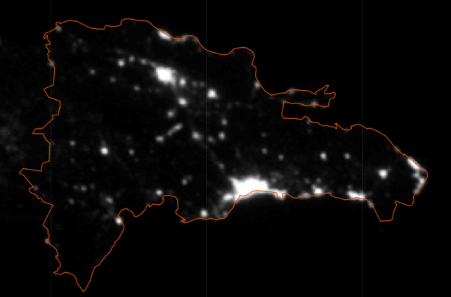
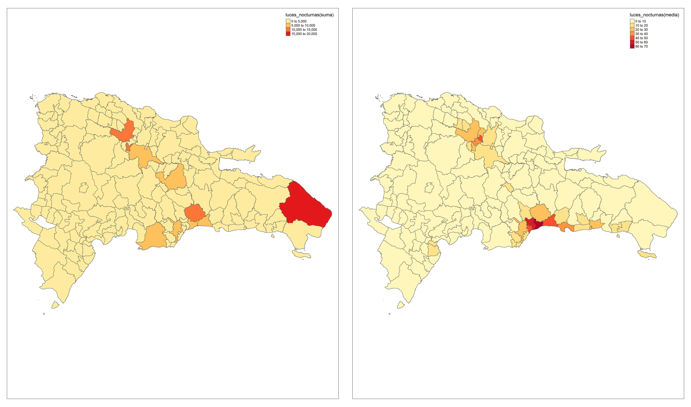

2.13 Luces nocturnas
La última variable que validaremos es la intensidad lumínica o luces nocturnas. La variable fue capturada por el satélite en una resolución de 30 metros por píxel. Los valores de la imagen van desde 0 (sin luces) hasta 63 (máxima cantidad de luces), y se pueden utilizar para analizar patrones de urbanización, así como para estimar el crecimiento de ciudades y la densidad de población. Por tanto, se espera que esta variable sea un reflejo de las densidades posesionales de los municipios.
Al comparar las imágenes vemos que describen y patrón similar dentro del mapa, sin embargo, la suma muestra un alto valor para el municipio de Higüey dado el tamaño del mismo. Por tanto, se opta por el promedio como medida de resumen para la variable luces_nocturnas.
m1_luces <-
m1 + tm_polygons(
"luces_nocturnas",
title = "luces_nocturnas(suma)",
palette = "YlOrRd"
)
m2_luces <-
m2 + tm_polygons(
"luces_nocturnas",
title = "luces_nocturnas(media)",
palette = "YlOrRd"
)
map_luces <- tmap_arrange(list(m1_luces,m2_luces),
ncol = 2,
norw = 1)
tmap_save(map_luces,
"../map_temp/luces.jpg",
width = 6920,
height = 4080,
asp = 0
)